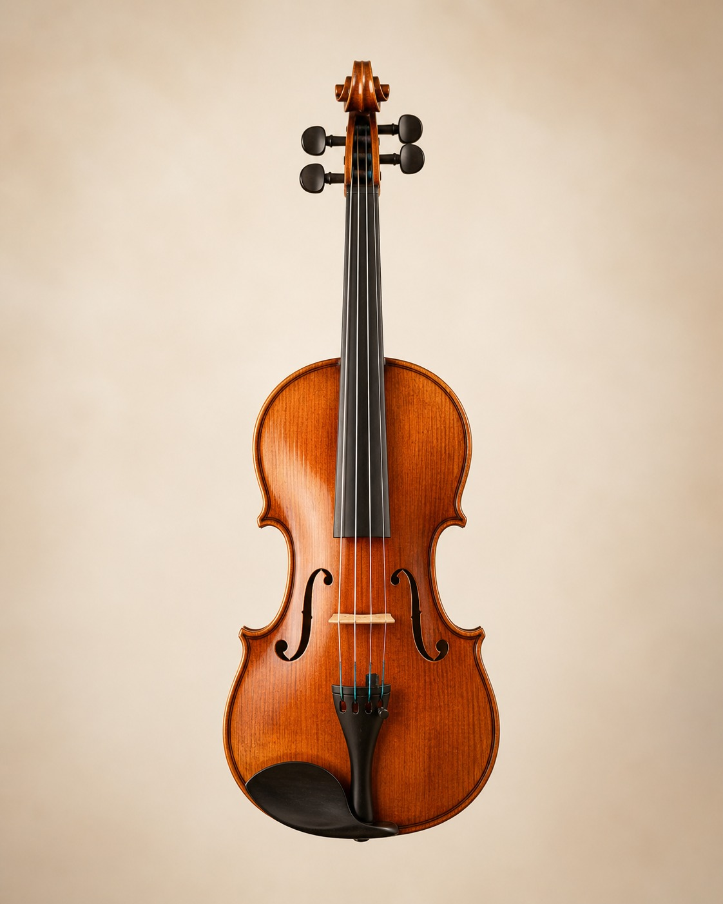
Concert Model / 2025
ホールで届く芯と、室内楽での柔らかい倍音を両立。
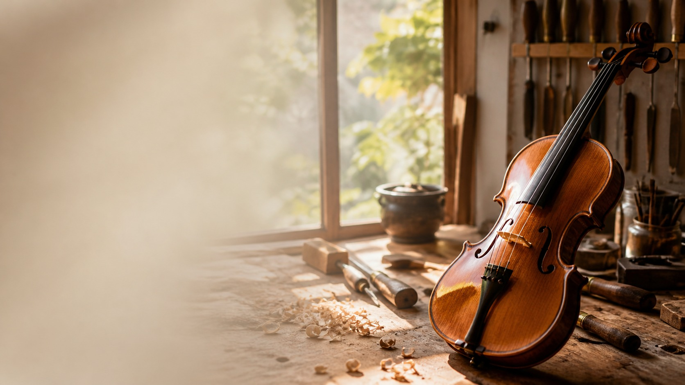
Concept
Atelier Sonareでは、木材選定から仕上げまでを手作業で進めます。 響きの美しさと、長く弾ける身体への自然さを同時に整えます。
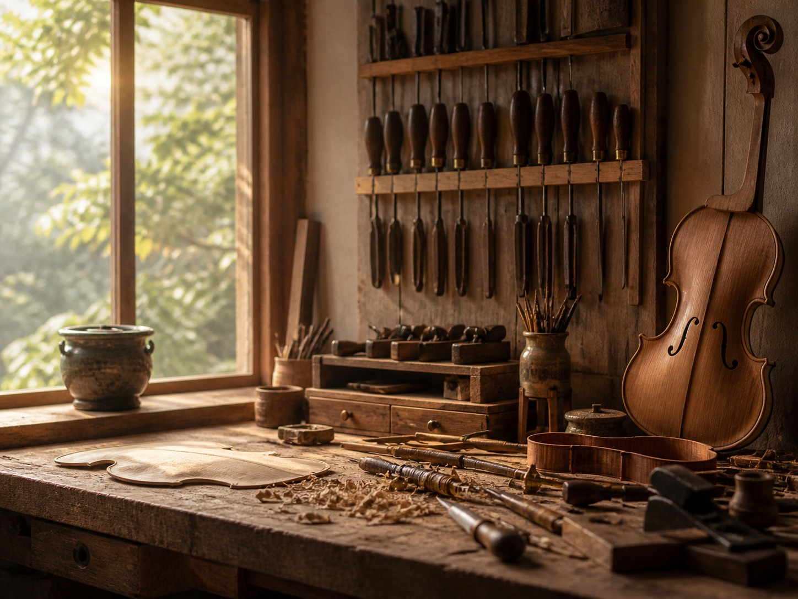
Works

ホールで届く芯と、室内楽での柔らかい倍音を両立。
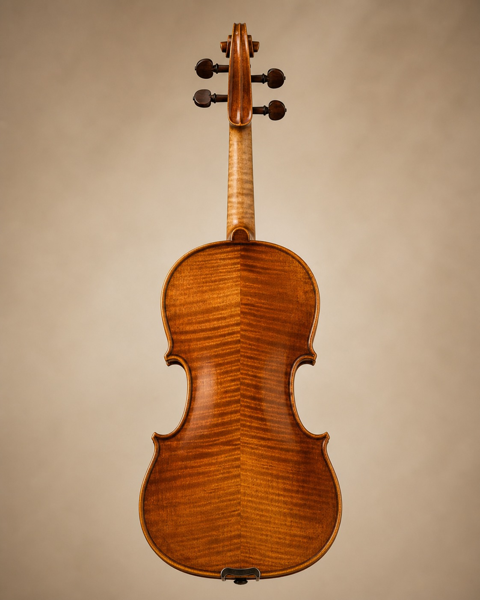
応答性と艶のある中音域を重視した設計。
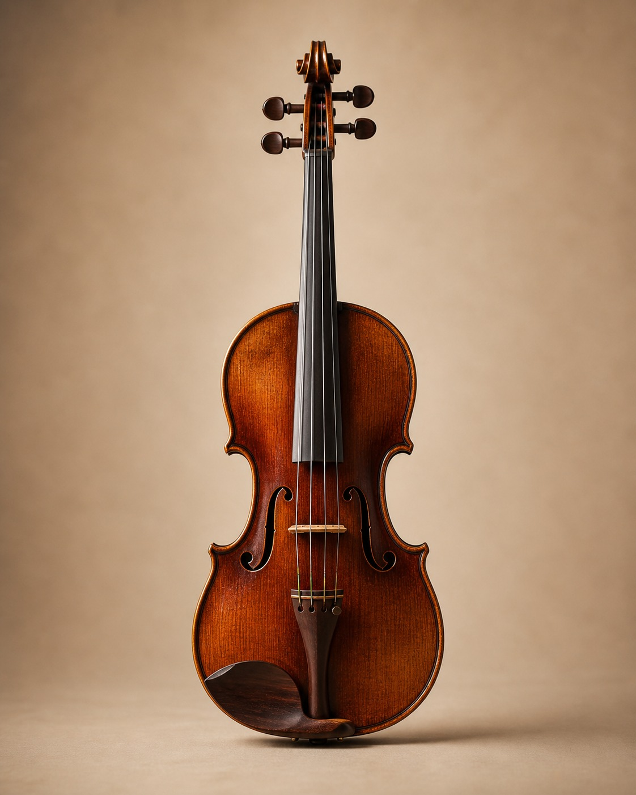
奏法と体格に合わせた、ネック形状・弦高の個別調整。
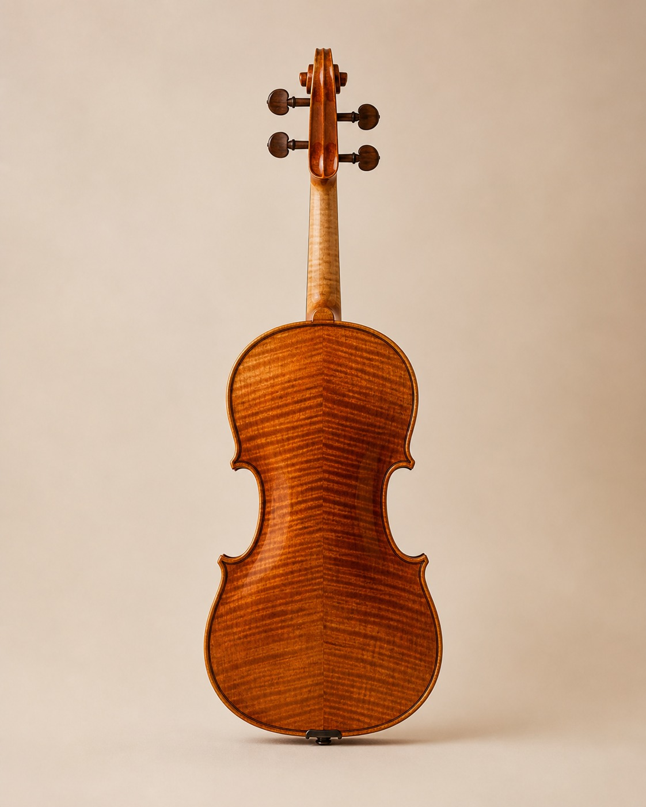
繊細な弱音と、伸びやかな高音域のバランスを重視。
Process
年輪と乾燥状態を見極め、用途に合う材を選定。
板厚をミリ単位で整え、音の立ち上がりを設計。
薄い塗膜で、木の響きを損なわずに仕上げます。
駒・魂柱・弦高を合わせ、奏者の感覚に寄せて納品。
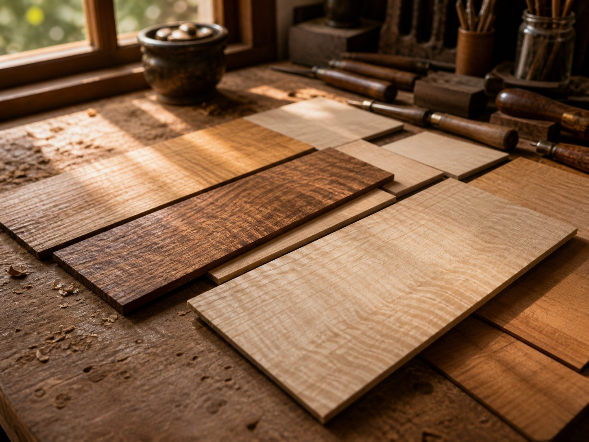
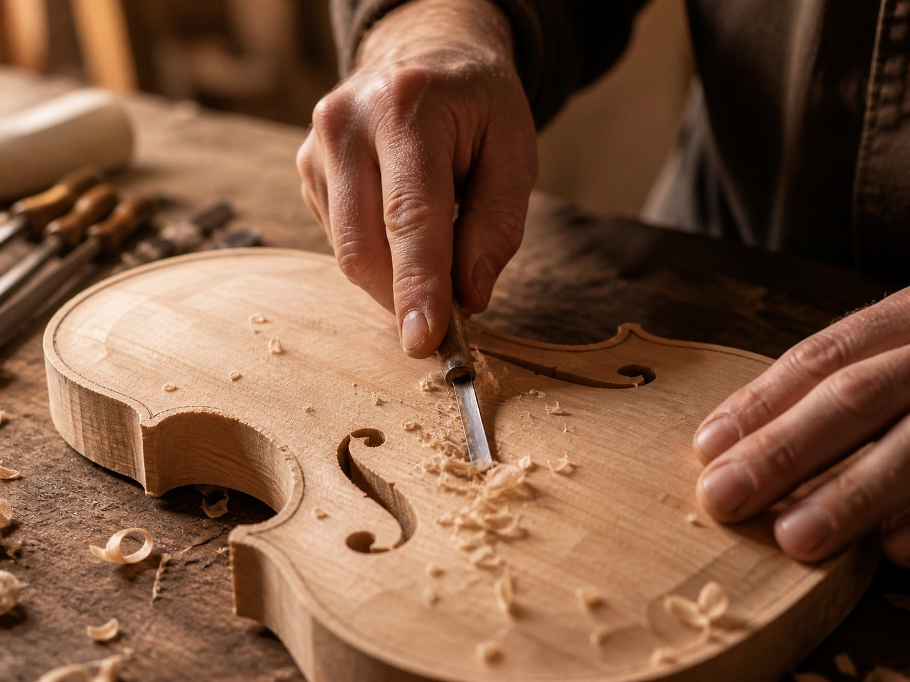
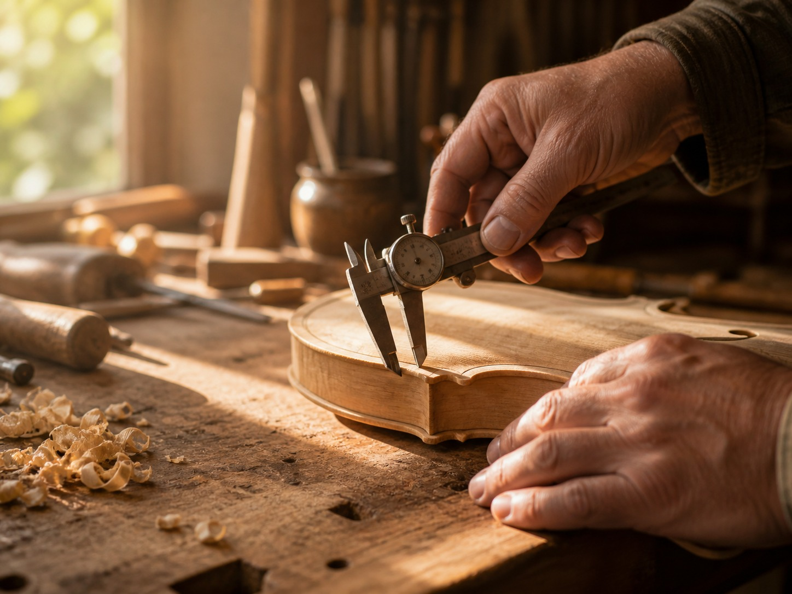
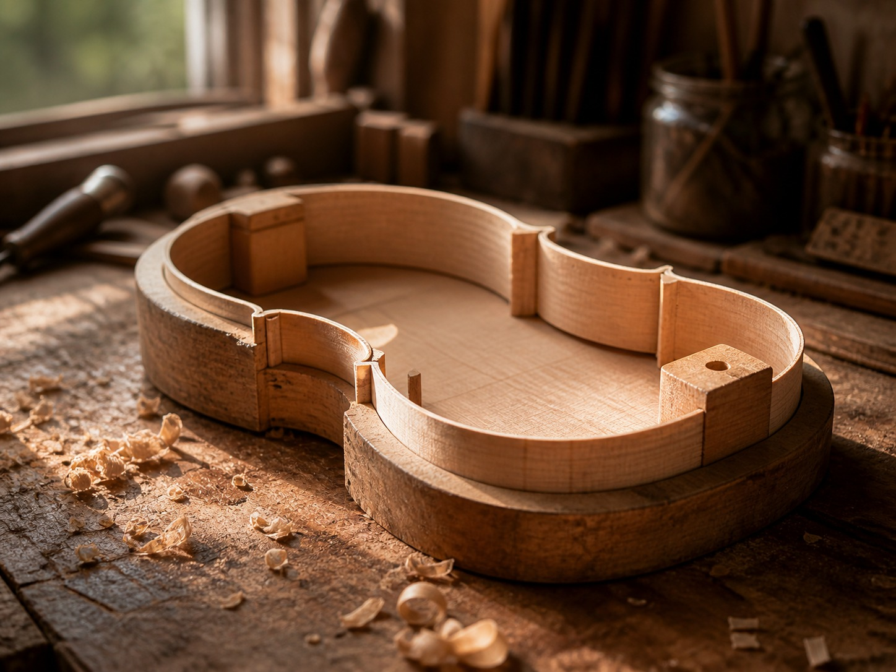
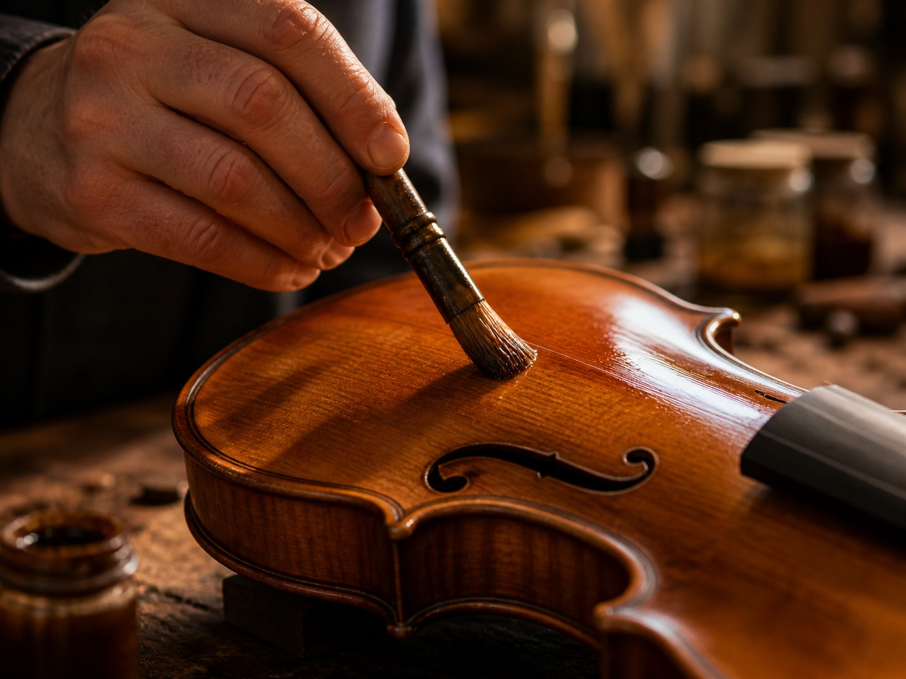
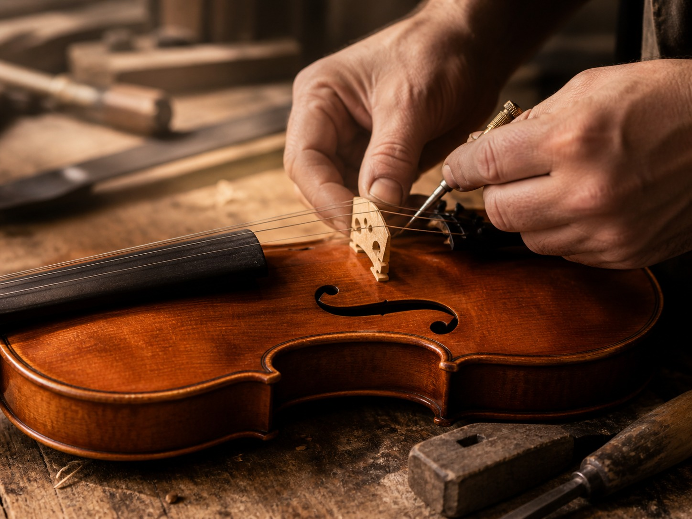
Dialogue
制作前に、演奏環境と理想の音像を丁寧に伺います。 欲しい音の瞬間を言葉にし、設計へ落とし込みます。
FAQ
仕様確定後、通常は4〜8か月です。演奏会日程がある場合は優先調整をご相談ください。
制作内容により異なりますが、基本モデルはご相談時に明確なお見積りをご提示します。
可能です。工房見学のみの予約枠もご用意していますので、お気軽にご連絡ください。